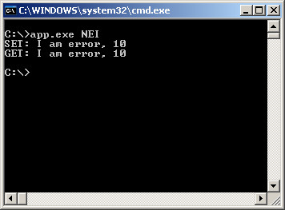

Steward
分享是一種喜悅、更是一種幸福
驅動程式 - Kernel Mode Driver Framework (KMDF) - 使用範例 - Assembly (MASM32) - PNP - Handle IOCTL IRP - Choose METHOD_NEITHER
參考資訊：
https://wasm.in/
http://four-f.narod.ru/
https://github.com/steward-fu/ddk
main.asm
.386p
.model flat, stdcall
option casemap : none
include c:\masm32\Macros\Strings.mac
include c:\masm32\include\w2k\ntdef.inc
include c:\masm32\include\w2k\ntstatus.inc
include c:\masm32\include\w2k\ntddk.inc
include c:\masm32\include\w2k\ntoskrnl.inc
include c:\masm32\include\w2k\ntddkbd.inc
include c:\masm32\include\wxp\wdm.inc
include c:\masm32\include\wdf\umdf\1.9\wudfddi_types.inc
include c:\masm32\include\wdf\kmdf\1.9\wdf.inc
include c:\masm32\include\wdf\kmdf\1.9\wdftypes.inc
include c:\masm32\include\wdf\kmdf\1.9\wdfglobals.inc
include c:\masm32\include\wdf\kmdf\1.9\wdffuncenum.inc
include c:\masm32\include\wdf\kmdf\1.9\wdfobject.inc
include c:\masm32\include\wdf\kmdf\1.9\wdfdevice.inc
include c:\masm32\include\wdf\kmdf\1.9\wdfdriver.inc
include c:\masm32\include\wdf\kmdf\1.9\wdfrequest.inc
include c:\masm32\include\wdf\kmdf\1.9\wdfio.inc
include c:\masm32\include\wdf\kmdf\1.9\wdfmemory.inc
includelib c:\masm32\lib\wxp\i386\BufferOverflowK.lib
includelib c:\masm32\lib\wxp\i386\ntoskrnl.lib
includelib c:\masm32\lib\wxp\i386\hal.lib
includelib c:\masm32\lib\wxp\i386\wmilib.lib
includelib c:\masm32\lib\wxp\i386\sehupd.lib
includelib c:\masm32\lib\wdf\kmdf\i386\1.9\wdfldr.lib
includelib c:\masm32\lib\wdf\kmdf\i386\1.9\wdfdriverentry.lib
public DriverEntry
IOCTL_GET equ CTL_CODE(FILE_DEVICE_UNKNOWN, 800h, METHOD_NEITHER, FILE_ANY_ACCESS)
IOCTL_SET equ CTL_CODE(FILE_DEVICE_UNKNOWN, 801h, METHOD_NEITHER, FILE_ANY_ACCESS)
.const
MSG_GET byte "IOCTL_GET",0
MSG_SET byte "IOCTL_SET",0
.data
szBuffer byte 255 dup(0)
.code
IrpFileCreate proc myDevice : WDFDEVICE, myRequest : WDFREQUEST, myFileObject : WDFFILEOBJECT
invoke DbgPrint, $CTA0("IRP_MJ_CREATE")
invoke WdfRequestComplete, myRequest, STATUS_SUCCESS
ret
IrpFileCreate endp
IrpFileClose proc myFileObject : WDFFILEOBJECT
invoke DbgPrint, $CTA0("IRP_MJ_CLOSE")
ret
IrpFileClose endp
IrpIOCTL proc myQueue : WDFQUEUE, myRequest : WDFREQUEST, myOutLen : DWORD, myInLen : DWORD, myCode : DWORD
local len : dword
local buf : dword
local mem : WDFMEMORY
.if myCode == IOCTL_SET
invoke DbgPrint, offset MSG_SET
invoke WdfRequestRetrieveUnsafeUserInputBuffer, myRequest, myInLen, addr buf, addr len
invoke WdfRequestProbeAndLockUserBufferForRead, myRequest, buf, len, addr mem
invoke WdfMemoryGetBuffer, mem, NULL
invoke memcpy, offset szBuffer, eax, myInLen
invoke DbgPrint, $CTA0("Buffer: %s, Length:%d"), offset szBuffer, myInLen
invoke WdfRequestSetInformation, myRequest, myInLen
.elseif myCode == IOCTL_GET
invoke DbgPrint, offset MSG_GET
invoke WdfRequestRetrieveUnsafeUserOutputBuffer, myRequest, myOutLen, addr buf, addr len
invoke WdfRequestProbeAndLockUserBufferForWrite, myRequest, buf, len, addr mem
invoke WdfMemoryGetBuffer, mem, NULL
invoke strcpy, eax, offset szBuffer
invoke strlen, offset szBuffer
invoke WdfRequestSetInformation, myRequest, eax
.endif
invoke WdfRequestComplete, myRequest, STATUS_SUCCESS
ret
IrpIOCTL endp
AddDevice proc myDriver : WDFDRIVER, pMyDeviceInit : PWDFDEVICE_INIT
local device : WDFDEVICE
local io_cfg : WDF_IO_QUEUE_CONFIG
local file_cfg : WDF_FILEOBJECT_CONFIG
local szDevName : UNICODE_STRING
local szSymName : UNICODE_STRING
invoke RtlInitUnicodeString, addr szDevName, $CTW0("\\Device\\MyDriver")
invoke RtlInitUnicodeString, addr szSymName, $CTW0("\\DosDevices\\MyDriver")
invoke WdfDeviceInitAssignName, pMyDeviceInit, addr szDevName
invoke WdfDeviceInitSetIoType, pMyDeviceInit, WdfDeviceIoBuffered
invoke WDF_FILEOBJECT_CONFIG_INIT, addr file_cfg, offset IrpFileCreate, offset IrpFileClose, NULL
invoke WdfDeviceInitSetFileObjectConfig, pMyDeviceInit, addr file_cfg, WDF_NO_OBJECT_ATTRIBUTES
invoke WdfDeviceCreate, addr pMyDeviceInit, WDF_NO_OBJECT_ATTRIBUTES, addr device
invoke WdfDeviceCreateSymbolicLink, device, addr szSymName
invoke WDF_IO_QUEUE_CONFIG_INIT_DEFAULT_QUEUE, addr io_cfg, WdfIoQueueDispatchSequential
lea eax, io_cfg
mov (WDF_IO_QUEUE_CONFIG ptr [eax]).EvtIoDeviceControl, offset IrpIOCTL
invoke WdfIoQueueCreate, device, addr io_cfg, WDF_NO_OBJECT_ATTRIBUTES, WDF_NO_HANDLE
ret
AddDevice endp
DriverEntry proc pMyDriver : PDRIVER_OBJECT, pMyRegistry : PUNICODE_STRING
local config : WDF_DRIVER_CONFIG
invoke WDF_DRIVER_CONFIG_INIT, addr config, AddDevice
invoke WdfDriverCreate, pMyDriver, pMyRegistry, WDF_NO_OBJECT_ATTRIBUTES, addr config, WDF_NO_HANDLE
ret
DriverEntry endp
end DriverEntry
.end
完成
